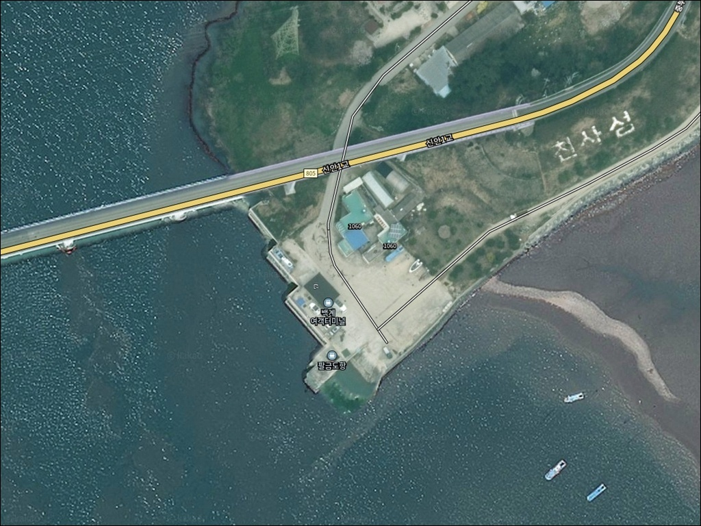
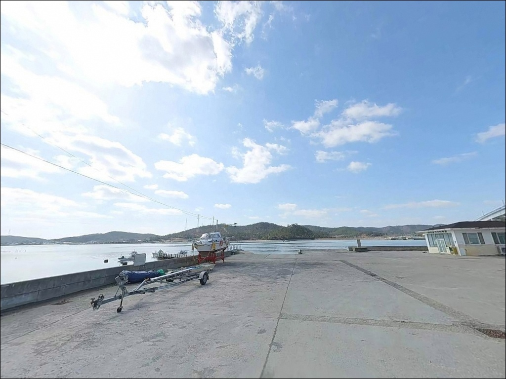
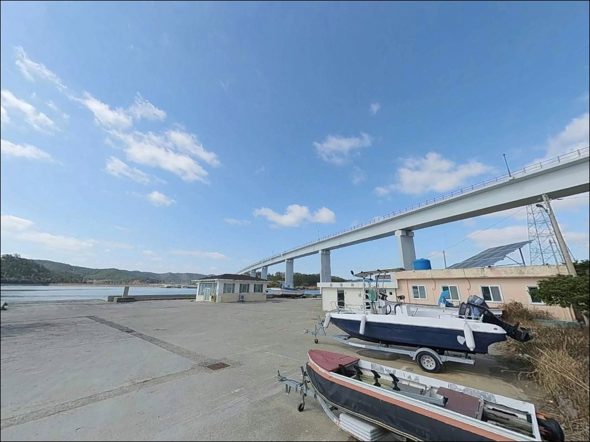
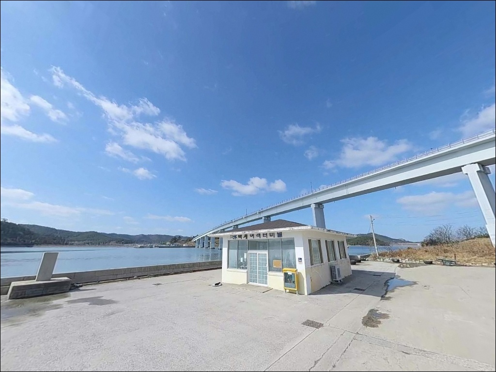
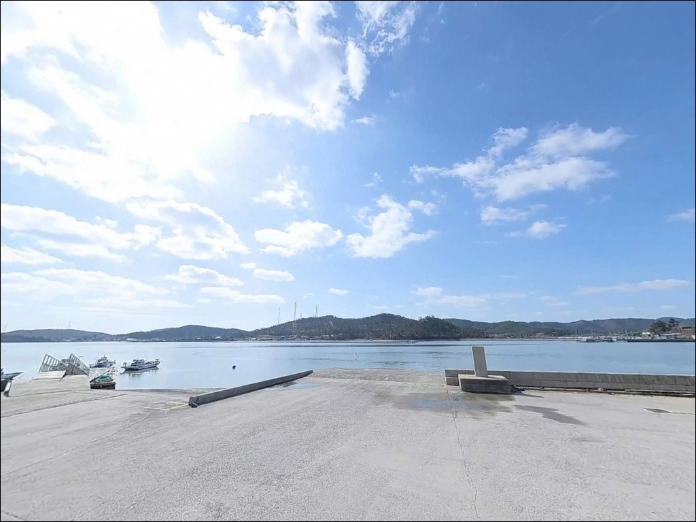
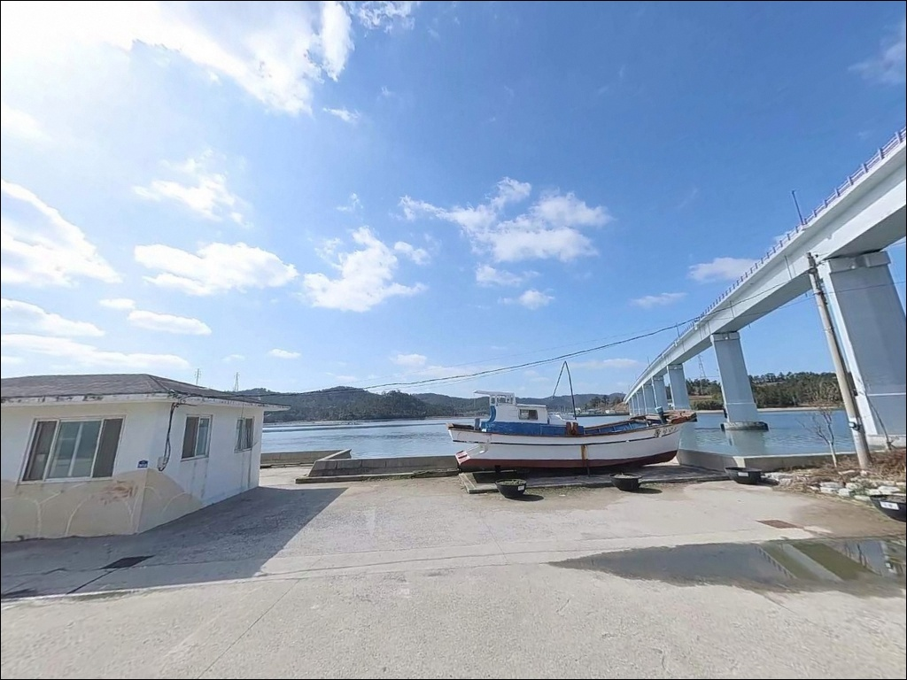
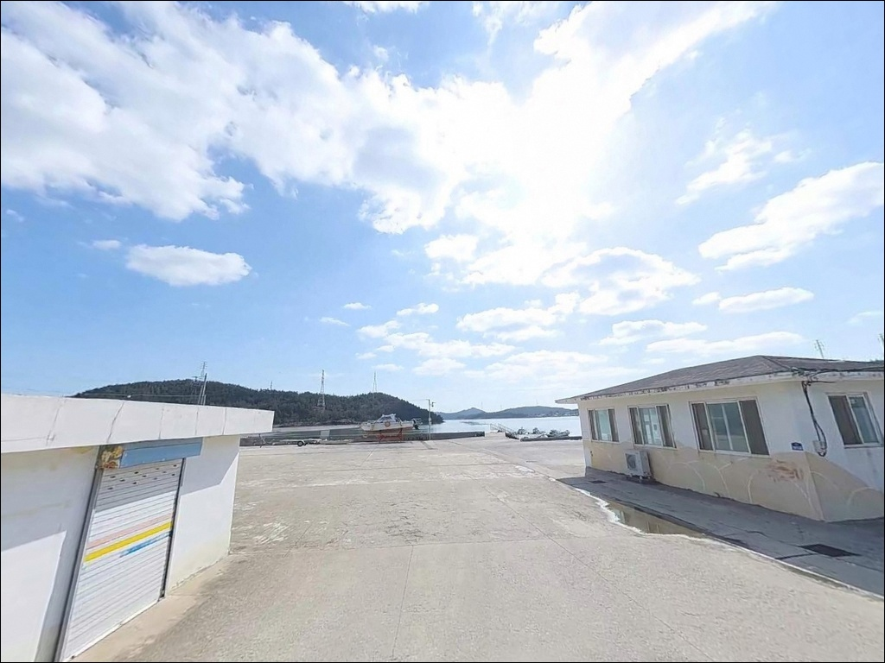
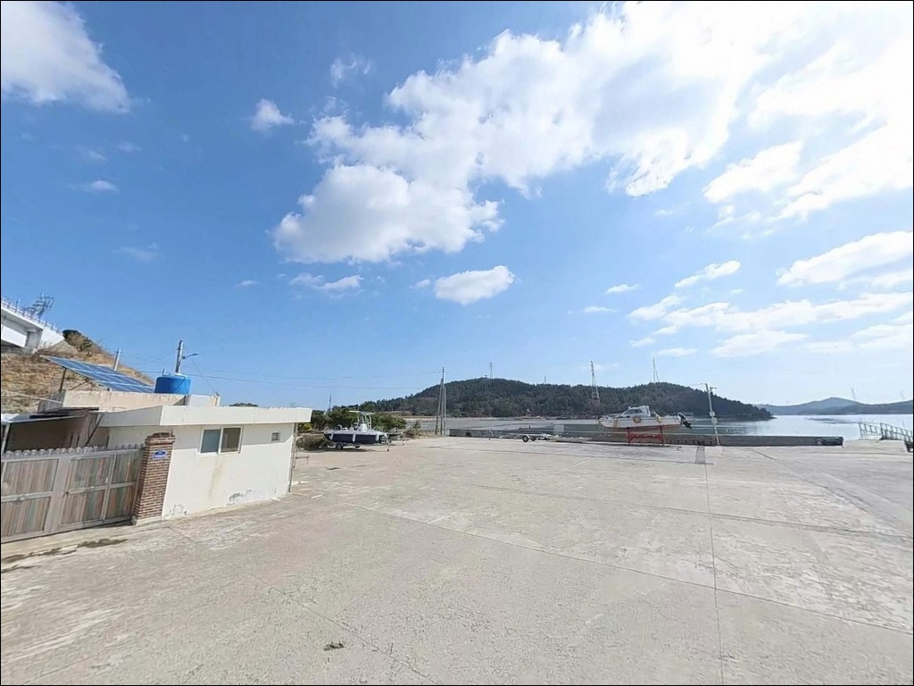
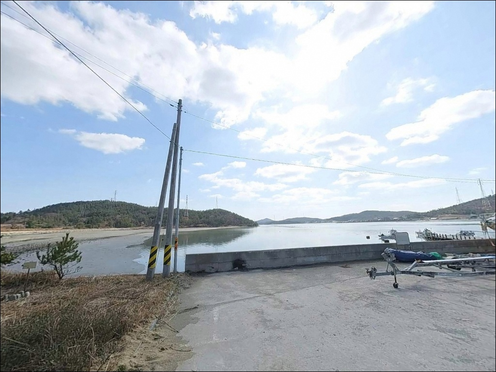

팔금도항(팔금선착장), 팔금도 전남 신안군 한적한 분위기 속 차박, 낚시를 함께 하기 좋은 곳
이 페이지에는 광고(제휴 링크 포함)가 있으며, 광고 링크를 통해 구매하면 운영자가 판매 수익 또는 수수료를 받을 수 있습니다. 포인트 사진: 카카오맵 스카이뷰·로드뷰. 이 페이지의 지도·사진 이미지는 카카오맵의 실제 서비스 이미지와 다를 수 있습니다.


포인트 안내
팔금도항(팔금선착장)
전남 신안군 팔금면 장촌리 1007-1
서해안 소규모 선착장 포인트에서
가장 자주 틀리는 판단은
물때를 확인하지 않고 출발하는 것입니다.
조수간만의 차가 큰 신안 해역에서는
간조 타이밍에 진입하면
갯벌이 드러나고 낚시 여건 자체가 사라집니다.
신안1교 아래 수로 입구에 자리한
팔금도항(팔금선착장)은
아직 낚시 커뮤니티에서 많이 언급되지 않은
다도해 소규모 포구입니다.
공개된 조황 자료가 거의 없는 만큼
이 글은 지형 조건과 진입 환경, 낚시 방식 적합성을
중심으로 정리합니다.
조황 단정이나 특정 어종 보장은
이 글의 범위에 포함되지 않습니다.

1. 진입 동선과 포인트 접근성
팔금도는 2019년 4월 천사대교 개통 이후
육지에서 차량으로 직접 진입할 수 있는 섬이 됐습니다.
일반적인 루트는 천사대교를 건너 암태도를 지나
중앙대교를 통해 팔금도로 들어오는 방식입니다.
장촌리는 팔금도 남동쪽 해안가 마을로,
섬 내 도로를 따라 접근합니다.
장촌리 방향 해안 도로는
왕복 1~1.5차선 수준의 농촌형 도로이며,
구간에 따라 교행이 어려운 폭이 있습니다.
대형 SUV나 캠핑카를 운행한다면
출발 전 위성지도로 진입로를 미리 확인하는 편이
안전합니다.
항 내부 또는 선착장 인근 공터에서
소형~중형 차량 기준 주차가 가능한 편입니다.
다만 소규모 어항 특성상
어선 이동 동선과 겹치는 구간이 있어
어업 작업에 방해가 되지 않는 자리를 먼저 확인하고
주차하는 것이 기본입니다.

2. 차박 환경과 야간 체류 여건
장촌리는 인구가 적은 조용한 어촌 마을입니다.
야간에는 차량 통행이 거의 없어
소음 면에서는 체류 조건이 나쁘지 않은 편입니다.
민가 밀집도가 낮은 편이지만
마을과 완전히 떨어진 고립형 환경은 아니라는 점을
미리 파악해 두는 것이 좋습니다.
신안1교 인근 수로 구조상
기상에 따라 바람이 세지는 시간대가 있습니다.
외항 방향으로 노출된 자리일수록
바람 영향을 직접 받는 편이며,
차박 자리를 잡을 때는 방향 확인이 필요합니다.
항 끝단으로 갈수록 가로등이 없는 구간이 많습니다.
개인 조명 장비는 반드시 챙겨야 하며,
주차 위치와 낚시 자리 사이의 동선도
밝을 때 미리 확인해 두는 편이 안전합니다.


3. 주변 편의시설 및 인프라 현황
팔금도항(팔금선착장) 반경 3km 이내에서
확인된 편의점·식당·마트 정보가 없습니다.
팔금도 전체 규모를 고려할 때
완전 자급 체제로 진입하는 것이 현실적입니다.
식수, 얼음, 낚시 소품, 연료는
암태도를 통과하는 시점에 미리 갖춰 두는 편이
효율적입니다.
팔금도에서 다시 암태도 방면으로 나가면
규모가 큰 마을 상권에 접근할 수 있습니다.
비상 상황이나 물품 보충이 필요할 때는
중앙대교를 건너 암태도 방향으로
이동하는 동선을 미리 파악해 두는 것이 좋습니다.

4. 간조 시 갯벌이 드러나는 포인트에서
놓치기 쉬운 준비사항
팔금도항(팔금선착장) 방문 전
가장 먼저 확인해야 할 것은 물때입니다.
서해안 특성상 조수간만의 차가 크고,
간조 시에는 선착장 주변 갯벌이 드러나
낚시 자체가 어려워지는 구간이 생깁니다.
바다타임에서 팔금도 물때를 확인하고
만조 전후 타이밍을 기준으로
출발 시각을 맞추는 것이 기본 전략입니다.
신안 해역은 기상 변화가 빠른 편입니다.
당일 아침 기상 예보를 다시 확인하고,
바람이 강하게 예보된 날은
외항 방향 자리는 피하는 편이 좋습니다.
암초나 테트라포드 구간은 미끄럼 위험이 있어
구명조끼와 미끄럼 방지 신발은 필수입니다.
소규모 어항이므로 어선 조업이 이루어지는 공간입니다.
어선 이동 동선과 어구에 채비를 던지지 않고,
야간에는 헤드랜턴을 켜
작업 구간과 낚시 자리를 명확히 구분해야 합니다.
출조 전 최신 조황은 꼭 검색해 보시기 바랍니다.

5. 지형 기반 낚시 여건 분석
팔금도항(팔금선착장)은 안좌도와 팔금도를 잇는
신안1교(길이 510m) 아래 수로 입구에 자리하고 있습니다.
두 섬 사이 수로 구조는
물때마다 조류가 모이고 빠지는 길목이 형성되는 구조로,
조류 변화 타이밍에 입질이 살아나는 조건이
만들어지는 편입니다.
서해안 특성상 만조 시와 간조 시의
수위 차가 큰 해역입니다.
만조 기준 수심은 3~5m 안팎으로 형성되는 편이며,
방파제 끝단이나 수로 입구 방향은
수심 변화 구간이 집중되는 자리입니다.
바닥에는 뻘과 잔돌이 섞인 구조가 예상되어
바닥층 탐색 시 밑걸림을 감안한 채비 구성이 필요합니다.
신안1교 직접 인용 문장:
신안1교 아래 수로 입구에 자리한 팔금도항은
조류 변화 타이밍에 입질이 살아나는 구조입니다.
낚시 커뮤니티에서 팔금도항(팔금선착장) 고유 조황이
공개된 자료는 현재 거의 없는 상태입니다.
이 일대 신안 다도해 해역에서 기대해볼 수 있는
어종 패턴은 감성돔, 볼락, 노래미, 붕장어,
주꾸미, 갑오징어 등이며,
계절과 물때에 따라 어종 구성이 달라집니다.
최신 조황은 "신안 팔금도 낚시" 또는
"신안 팔금면 조황"으로 출조 전 검색해 두는 것이
이 포인트에서는 특히 중요합니다.


6. 팔금도항에 어울리는 낚시 스타일
선착장 끝단이나 방파제 외항 방향에서
원투낚시가 가장 무난한 접근입니다.
조류가 흐르는 방향으로 채비를 보내
바닥층을 탐색하는 방식이 이 포인트 구조에 맞습니다.
조류가 살아있는 만조 전후 타이밍에
집중하는 것이 효율적입니다.
수로 입구 방향으로 조류 흐름이 형성되는 구간은
릴찌낚시로 흘림 낚시를 시도해볼 만한 자리입니다.
신안 다도해 방파제 해역에서
감성돔 시즌 기대해볼 수 있는 스타일이며,
조류 방향을 먼저 파악한 뒤 자리를 정하는 것이
기본 순서입니다.
봄~가을 시즌에는 주꾸미·갑오징어 에깅도
신안 다도해 해역에서 기대해볼 수 있는 스타일입니다.
갯벌 성격의 저질이 섞인 구간이 있다면
에기를 바닥 가까이 운용하는 방식이 유리합니다.
야간이나 이른 새벽에는 소형 지그헤드 채비로
선착장 주변 암초 경계를 천천히 탐색하는
루어 방식도 이 포인트 구조에 어울립니다.
서해안 조수간만의 차가 큰 포인트에서
물때 계산 없이 진입하면
낚시 여건 자체가 사라집니다.

7. 대안 포인트와 플랜 B 동선
팔금도항(팔금선착장)이 기대에 못 미치거나
조류가 너무 강할 때는
팔금도 내 고산항(고산선착장)이 첫 번째 대안입니다.
팔금도 동쪽 관문 선착장 구조로
진입 여건이 상대적으로 안정적이며,
낚시 접근도 가능한 구조입니다.
중앙대교를 건너 암태도 방향으로 이동하면
오도항 인근 포인트를 대안으로 삼을 수 있습니다.
안좌도와 연결된 읍동선착장 방면도
수로형 지형에서 루어 낚시를 노려볼 수 있는
접근성이 나은 대안 포인트입니다.
차박 대안으로는 팔금도 읍리 방면 평지나
자은도 분계해수욕장 방면이
신안 다이아몬드제도 내에서
편의 인프라가 상대적으로 갖춰진 지역으로
알려져 있습니다.

먼저 답사해 두면 좋은
신안 다도해 미개척 수로 포인트
신안1교 아래 수로 입구에 자리한
팔금도항(팔금선착장)은
아직 낚시 커뮤니티에서 많이 알려지지 않은
조용한 소형 포구입니다.
원투낚시·루어낚시·에깅 스타일을 즐기는 낚시인에게
수로형 지형 조건은 충분히 흥미로운 구조이며,
이른 새벽이나 만조 전후 타이밍을 노린다면
혼자 조용히 탐색하기에 어울리는 포인트입니다.
반면 편의시설이 전무한 만큼
암태도 통과 전에 완전히 자급 준비를 마쳐야 하고,
간조 타이밍을 무시하고 진입하면
낚시 여건이 급격히 나빠지는 포인트이기도 합니다.
물때 확인, 자급 준비, 진입로 사전 점검—
이 세 가지를 갖추고 간다면
신안 다도해의 덜 알려진 수로 포인트를
제대로 탐색해볼 수 있습니다.
낚시를 마치고 조용한 어촌 마을에서
수로 옆에 차를 세우고 하룻밤 머무는 차박 여행자라면,
먼저 답사해 두면 다음 출조가 훨씬 수월해지는
그런 성격의 포인트입니다.